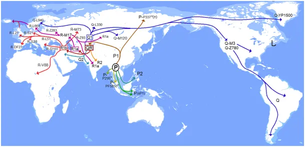
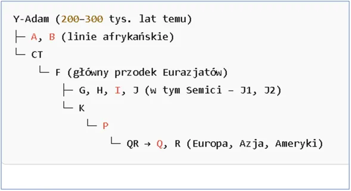
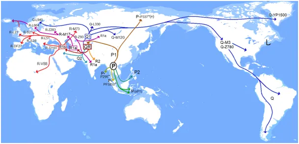
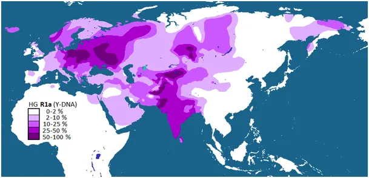
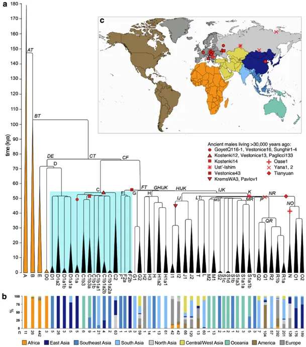
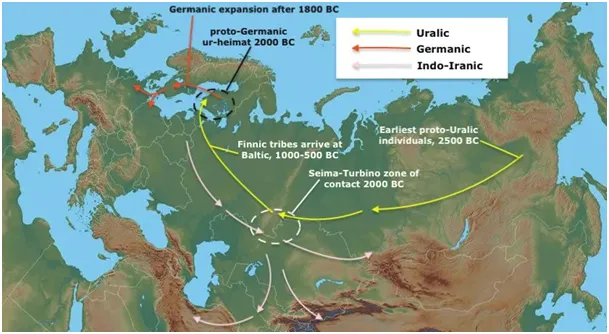

Krew nie woda.
Od kilku dekad nauka dostarcza bardzo ważnego narzędzia do zrozumienia genezy ludów i kultur. Wszyscy doskonale wiemy, że człowiek występuje w dwóch wersjach, które zdefiniowane są w parze chromosomów XX lub XY. Wiemy też, że posiadacze dwóch identycznych chromosomów XX to kobiety, a XY to mężczyźni. To właśnie przekazanie potomstwu chromosomu Y ojca decyduje o męskiej płci potomstwa. Mało kto natomiast wie, że tylko w chromosomie Y są informację, na podstawie której na 100% można zdefiniować męskiego przodka ojca i jego ojców, a na podstawie chromosomu X córki nie można zdefiniować matki. Kobieta dziedziczy po jednym X od matki i od ojca, a mężczyzna dziedziczy X od matki i Y od ojca. Oznacza to, że chromosom X podlega rekombinacji, mieszaniu, więc nie zachowuje się jak czysta linia dziedziczenia. Bardzo ciekawe jest, że od zarania ludzkości, niejako intuicyjnie, dziedzictwo, w tym przynależność do plemienia, jest przekazywane po linii męskiej. Odstępstwem od tej zasady jest dziedziczenie u Żydów po matce.

Ludzie posiadają w swych chromosomach sekwencje nazwane haplogrupami, które w chromosomach Y niosą całkowitą informację o przodkach męskich. Raz na kilka pokoleń dochodzi do mutacji tego genu i jeśli właściciel tego genu powieli go z sukcesem i zacznie on dominować w jego grupie społecznej stanie się praojcem kolejnych pokoleń. Każda taka mutacja zawiera 100% świadectwa dziedzictwa "Adama" i nowe fragmenty genu, mutacja nie niszczy wzorca starszego tylko dodaje nowe elementy. Jest to zatem system niezawodny.

Badania genetyczne przyniosły zaskakuje wnioski, na pograniczu Europy i Azji, czyli w naszym rejonie kulturowym wszyscy mężczyźni mają wspólnego przodka sprzed ok 30 tys. lat, czyli było tak, że poza tym jednym praojcem oznaczonym jak QR nie udało się przenieść swych genów żadnemu mężczyźnie na linii równoległych. Jest to tak mało prawdopodobne, że zostaje nam hipoteza alternatywna: poza praojcem QR nie przeżył nikt więcej, a to jest historia Noego. Niestety nie pasuje to do oceny pojawienia się semitów, czyli potomków jednego z synów Noego, Sema. Semici wyodrębnili się 10 tys. lat wcześniej, zatem musimy szukać innego rozwiązania niż potop.

Polacy najczęściej posiadają gen R1a, co ilustruje pierwsza mapa, jak widać naszych krewniaków spotkać możemy najczęściej w dzisiejszym Pakistanie i wielkiej Kotlinie Turfańskiej w środku Azji na północ od wyżyny Tybetańskiej. Kotlina ta jest jedyną drogą w Azji i w niej mamy wszelkie możliwe geny. Schemat powstawania haplogrup pokazuje, że nasz haplogrupa ok. 25 tys. lat temu podzieliła się od bratniej grupy R1b, która dominuje w Irlandii i Szkocji, ale też jest drugą grupą w Turcji. Co ciekawe we wschodniej Turcji często występuje nasza grupa R1a i jest zapewne wynikiem migracji na Szlaku Jedwabnym z Pakistanu.

Moją uwagę przykuła mapka ostatnia, pokazujące masowe migracje sprzed 4000 tys. lat, wiec w okresie już historycznym, w czasach świetności Egiptu, zaledwie kilkaset lat przed Mojżeszem.

Był to okres, gdy od Indii do Pomorza nad Bałtykiem znany był wytop brązu. Używanie metalu zmieniało radykalnie nie tylko życie codzienne, ale głownie sposób prowadzenia wojen i transportu. W środkowej Azji przecinały się drogi różnych ludów. Niestety mało wiemy o kształtowaniu się języków, ale możemy cofnąć się o 4000-5000 lat, gdy słowa jem, czy p(ić) nasi przodkowie i przodkowie Turków wymawiali identycznie i pozostało tak do dziś. Gdy Turek mów "jemy" to pyta, czy jemy? Oczywiście że jemy, bo turecka kuchnia jest doskonała!
Paweł Klimczewski